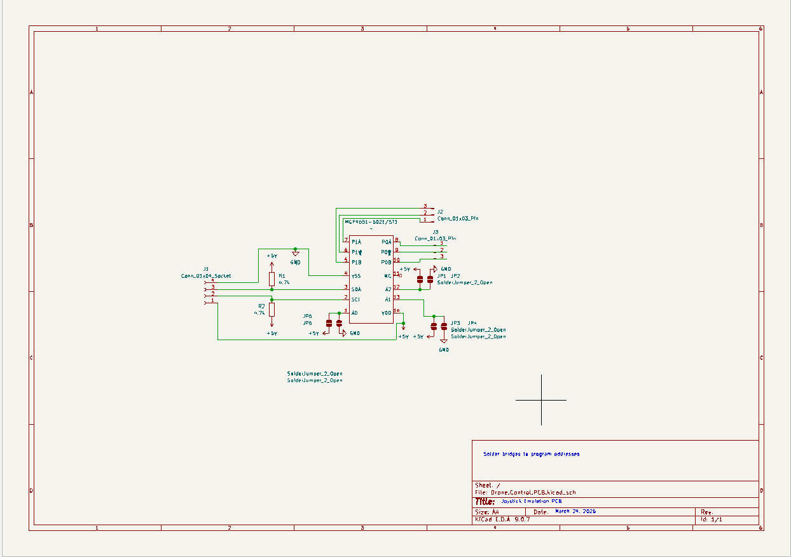
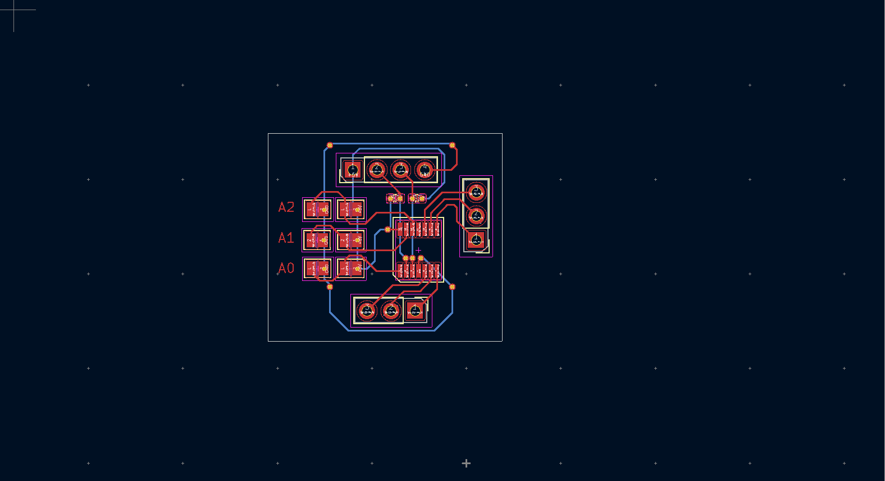

Schematic Design
The schematic was designed in KiCad and was modelled around the MCP4651-502E/ST, a digital potentiometer IC that uses I2C.
A custom PCB designed to provide digitally controlled resistance values for analog signal control and external circuit interfacing.
The objective of this project was to design and manufacture a PCB that could replace a physical potentiometer using digital control.
This project focused on schematic design, component footprint selection, PCB layout and preparing the design for manufacture.
This project consisted of three main stages:
The schematic was designed in KiCad and was modelled around the MCP4651-502E/ST, a digital potentiometer IC that uses I2C.

The traces were then routed, and the bill of materials was created.

The PCB was then manufactured by PCBWay. The PCB will then be assembled using a hot plate and solder paste.